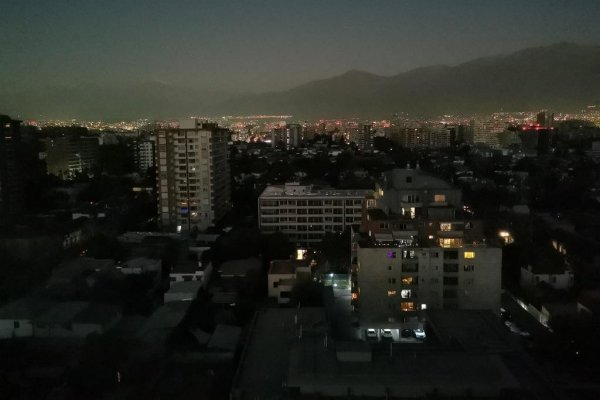

Noticias Recientes
| Imagen | Título | Categoría | Resumen |
|---|---|---|---|
|  | Cortes de luz afectan a la RM | Hogares Afectados | Más de 40 mil clientes sin suministro eléctrico en Santiago. Leer más |
| Debate tributario en Chile | Economía | Gobierno y oposición discuten sobre una nueva reforma tributaria. Leer más | |
 |
Fiscal alerta sobre crimen organizado | Seguridad | El fiscal Garrido compara grupos armados del sur de Chile con el Tren de Aragua. Leer más |